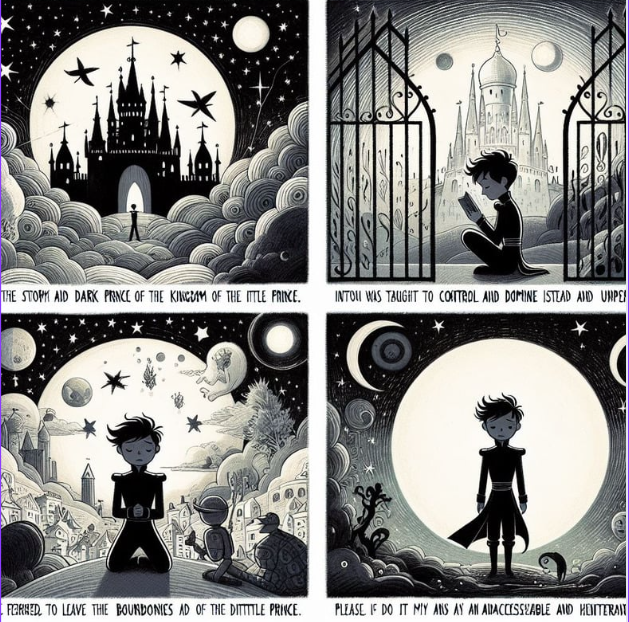
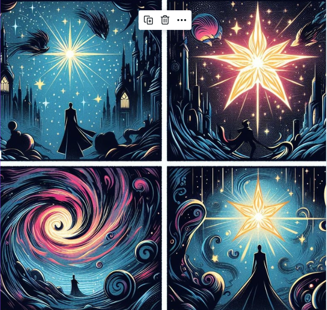
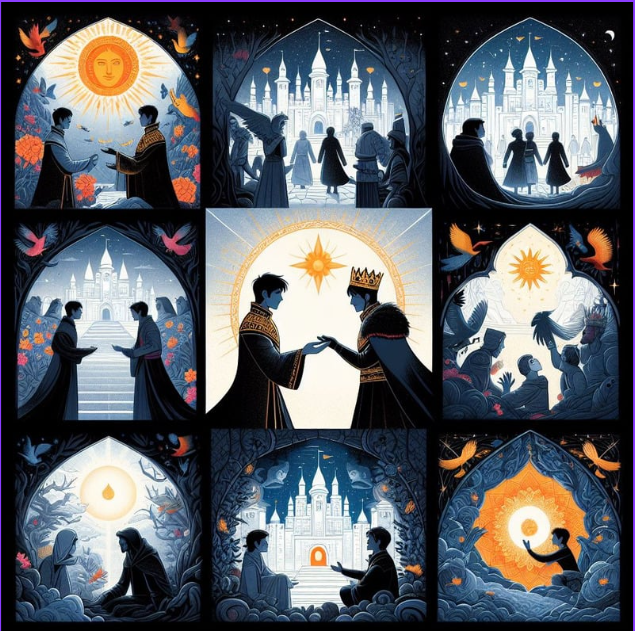
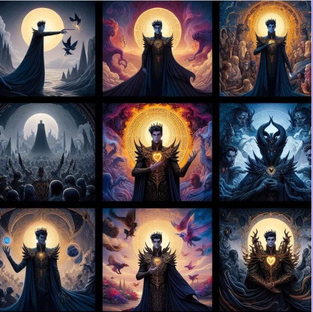
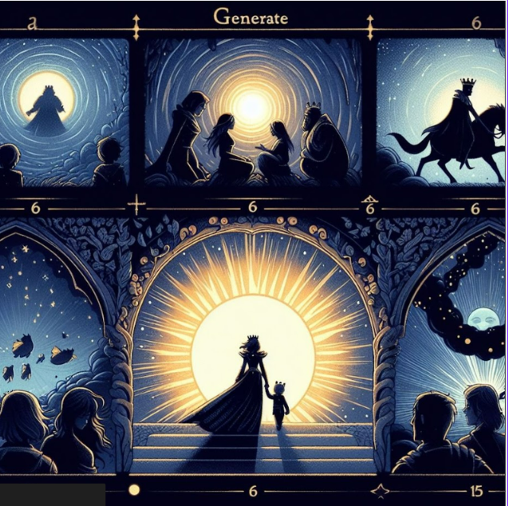

O Príncipe Tenebroso, herdeiro de um reino envolto em sombras e mistérios,
contrastava profundamente com a inocência radiante do Pequeno Príncipe. Seu semblante austero,
pálido, e olhos penetrantes emanavam uma aura de mistério. Desde jovem, foi criado num ambiente de r
igidez e solidão, distante de afetos e aprendizados do coração.

O reino do Príncipe Tenebroso era marcado por escuridão e opressão.
Ele foi ensinado a controlar e dominar, em vez de explorar e compreender.
Ao contrário das viagens interplanetárias do Pequeno Príncipe, Tenebroso era proibido de sair dos limites do seu reino,
temido por muitos como um lugar inacessível e ameaçador.

Por um acaso do destino, o Príncipe Tenebroso encontrou uma estrela perdida,
diferente de todas as outras que seu reino sombrio já havia conhecido. Essa estrela, radiante e cheia de luz,
despertou nele uma curiosidade há muito adormecida. Esse encontro marcou o início de uma jornada pessoal de descoberta
para o Príncipe Tenebroso.

Desafiando as regras e tradições de seu reino, o Príncipe Tenebroso
embarcou em uma jornada para compreender o mundo exterior. Ele aprendeu sobre amor, compaixão e as nuances da vida
além dos muros de seu reino.
Descobriu gradualmente que a verdadeira força não está no domínio sobre os outros, mas na compreensão e aceitação mútua..

Assim, o Príncipe Tenebroso se tornou uma figura simbólica da dualidade entre a escuridão e a luz.
Revelou que mesmo os corações mais sombrios podem encontrar redenção e beleza na jornada pela compreensão e empatia.
Sua transformação iluminou não apenas seu próprio mundo, mas também influenciou a percepção de seu reino sobre a natureza humana.

Ao final de sua jornada, o Príncipe Tenebroso não só encontrou a luz interior
como também tornou-se um catalisador para a mudança em seu reino. Sua história destacou que a verdadeira
grandeza reside na capacidade de amar, compreender e aceitar, independentemente das sombras que possam
cercar nossos corações, inspirando todos a enxergar além da escuridão.